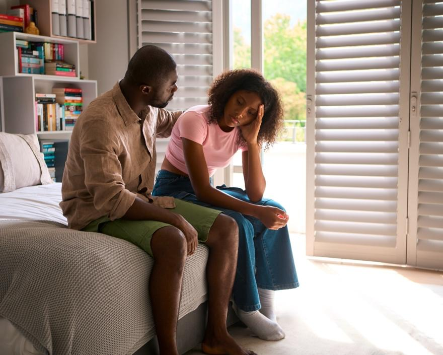

Youth suicide happens when a young person dies by taking their own life. It is a very serious and tragic event. Some teens may also think about suicide or try to hurt themselves. These are called suicidal thoughts or suicide attempts.
Feeling sad or hopeless does not mean you are weak. Many teens feel this way. You are not alone. Help is always available. Healing takes time, but most teens feel better with treatment and support.
Your care team is here to help.

There is no one cause of suicide. It often happens when a young person feels very sad, hopeless, or overwhelmed. Some things that may raise the risk include:
Mental health conditions: Like depression, anxiety, or trauma
Bullying or abuse: At school, online, or at home
Family stress: Divorce, violence, or lack of support
Death of a close loved one: Such as the loss of a parent
Feeling alone: Not having someone to talk to
Substance use: Using alcohol or drugs
Trouble at school: Like low grades or peer problems
Access: To weapons or prescription drugs
Being exposed to suicide: Such as the suicide of someone they know, in fiction, or on the news
LGBTQ+ youth: May be at higher risk if they do not feel accepted
Most teens who feel this way do not want to die. They want the pain to stop. With support and care, they can feel better.
A teen may be in danger if they:
Talk about wanting to die or say life is not worth it
Say they feel trapped, hopeless, or like a burden
Withdraw from friends, family, or activities
Have big changes in mood, sleep, or eating
Start giving away things or saying goodbye
Hurt themselves on purpose, like cutting or burning themselves
Use alcohol or drugs more than usual
If you notice any of these signs, get help right away.
If, at any time, you have thoughts of self-harm or suicide, please talk to someone right away. The 988 Suicide & Crisis Lifeline offers free, 24/7 call and text access to trained crisis counselors who can help anyone in emotional distress. Just call or text 988.
Your care team may:
Ask questions about mood, thoughts, and feelings
Check for signs of depression or anxiety
Talk with the teen and the parent
Make a safety plan
Suggest seeing a mental health therapist or counselor
Suggest medicine for mental health issues like depression
Teens can get better with help. There are many ways to support healing.
Some teens may be prescribed antidepressants or other mental health medicines. These help balance brain chemicals that affect mood. They may take a few weeks to work.
Your care team will talk to you about any side effects. Never stop or change the dose without speaking to your care team.
Your care team may recommend talk therapy, also called counseling. For this treatment, you meet with a therapist or counselor regularly to talk about your feelings. They can teach you strategies for coping with stress and sadness. They can also support you in starting habits that will make you feel better.
With young people, family therapy is often recommended. This allows the whole family to get support and to learn how to support the teen.
Sleep well: Sleeping helps the brain and body rest. Teens need 8 to 10 hours of sleep a night.
Eat healthy foods: Healthy foods fuel the body and help the brain. Try to include fruits, vegetables, and whole grains in your diet.
Limit screen time: Too much time on your phone or computer can affect your mood. Take breaks and avoid harmful content.
Move your body: Walk, dance, or play sports. Exercising just 30 minutes a day can improve your mood.
Stick to a schedule: Regular wake-up times, meals, and bedtimes can help keep your mood steady.
Stay involved: School, hobbies, and time with others give you a sense of purpose.
Limit social media: Unkind posts or comparing yourself to others can harm your self-esteem.
Avoid drugs and alcohol: They can make feelings worse.
You may have follow-up visits to check on your progress.
Keep going to therapy and taking medicine if prescribed. Always talk to your care team before making any changes to your treatment.
If you have a friend or sibling who is struggling, you can help:
Speak up: If someone talks about suicide, do not stay silent. Tell a trusted adult or care team.
Be kind: A small act of kindness can make a big difference.
Include them: Include your friend or sibling in your conversations and activities. This will ensure that they do not feel left out.
Call your care team if you:
Feel sad, hopeless, or empty most days for more than 2 weeks
Have lost interest in things you used to enjoy, like sports, hobbies, or spending time with friends
Feel like you want to be alone most of the time
Have changes in eating or sleeping habits, like eating or sleeping much more or much less than usual
Are more irritable, angry, or easily upset than usual
Do not care about your appearance or hygiene, or have let your grades drop suddenly
Are using alcohol or drugs more often
Have questions or concerns about your mood, behavior, or mental health
Get help right away if you are:
Talking about wanting to die or kill yourself, or saying things like “I wish I was not here”
Making a plan or looking for ways to hurt yourself, like searching for methods online, or gathering pills or sharp objects
Giving away favorite things or saying goodbye to friends and family
Writing or posting about death, suicide, or feeling trapped with no way out
Acting dangerously or taking big risks, like reckless driving or using drugs or alcohol in unsafe ways
Attempting to harm yourself in any way, such as cutting, burning, or overdosing
If you or someone you know is in immediate danger, call 911 or go to the nearest Emergency Room.
Thank you for trusting us with your care. We are here to support you and want you to feel your best. Contact us with any questions.
IF YOU HAVE A MEDICAL EMERGENCY, CALL 911 OR GO TO THE EMERGENCY ROOM.
The information presented is intended for general information and educational purposes. It is not intended to replace the advice of your health care provider. Contact your health care provider if you believe you have a health problem.
Last updated May 2025
© 2025 Mytonomy, Inc. All rights reserved.